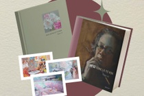

Trịnh Lữ (tên thật Trịnh Hữu Tuấn) được nhiều người biết tới qua những bản dịch tài hoa như: Đại gia Gatsby, Rừng Na Uy, Cuộc đời của Pi, Con nhân mã ở trong vườn, Utopia - Địa đàng trần gian... Bên cạnh trang sách dịch, ông còn là nghệ sĩ với những bức vẽ tinh tế.
Sách Vẽ gì cũng là tự họa (Nhà xuất bản Mỹ thuật và Omega Plus phát hành) tuyển chọn tranh đẹp cùng câu chuyện nghệ thuật của Trịnh Lữ. Đây là cuốn sách mở đầu cho tủ sách Mỹ thuật Việt Nam do Omega Plus thực hiện. Một số tác phẩm có trong sách sẽ được trưng bày tại triển lãm "Vẽ gì cũng là tự họa" diễn ra ngày 4-11/1 tại The Muse Artspace (Hà Nội).
